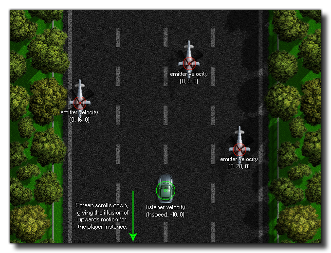

Diese Funktion kann verwendet werden, um dem Zuhörer Doppler- Effekte zu geben und Audio-Bewegungen basierend auf dem Vektor zu simulieren, der aus den gegebenen relativen x-, y- und z-Positionen aufgelöst wird. Wenn der Zuhörer selbst niemals bewegt wird oder die Bewegung keine konstante Bewegung ist, müssten Sie diese Werte normalerweise nicht einstellen, sondern zum Beispiel, wenn Sie ein Scroll-Spiel machen, bei dem der Spieler einen konstanten Grund hat obere Bewegung und die Feinde eine konstante Bewegung von oben nach unten, würden Sie die Hörer- und Emittergeschwindigkeiten einstellen (für Emitter, die Sie verwenden würden) audio_emitter_velocity ) an die entsprechenden Vektoren, um den korrekten Doppler-Effekt zu simulieren, wenn sie sich an der Spielerinstanz vorbeibewegen.
HINWEIS: Wenn Sie mehrere Listener haben, sollten Sie die Funktion verwenden audio_listener_set_velocity.Das Bild unten zeigt, wie dies für das oben genannte Beispielspiel eingerichtet werden könnte: 
audio_listener_velocity(vx, vy, vz);
| Streit | Beschreibung |
|---|---|
| x | Die x Geschwindigkeitskomponente des Listeners (Standard 0). |
| y | Die y-Geschwindigkeitskomponente des Listeners (Standard 0). |
| z | Die z-Geschwindigkeitskomponente des Listeners (Standard 0). |
N/A
if speed > 0
{
audio_listener_velocity(abs(hspeed), abs(vspeed),
0);
}
Der obige Code überprüft, ob die Geschwindigkeit der Player-Instanz über 0 liegt. Wenn dies der Fall ist, verwendet er die entsprechenden absoluten Komponenten hspeed und vspeed, um die Hörergeschwindigkeit einzustellen.